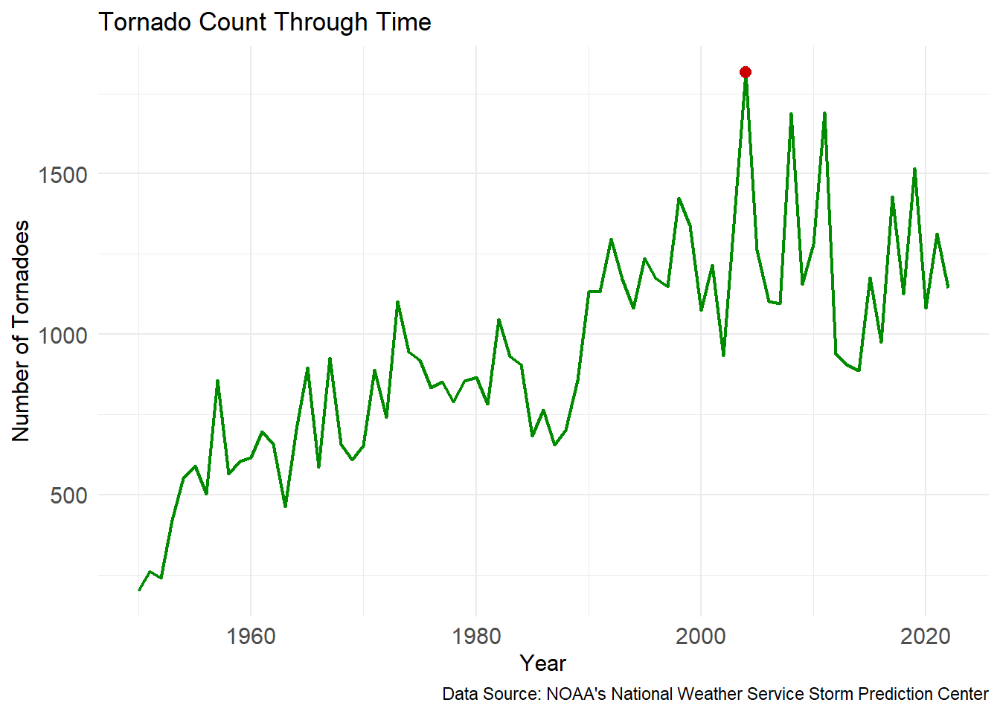
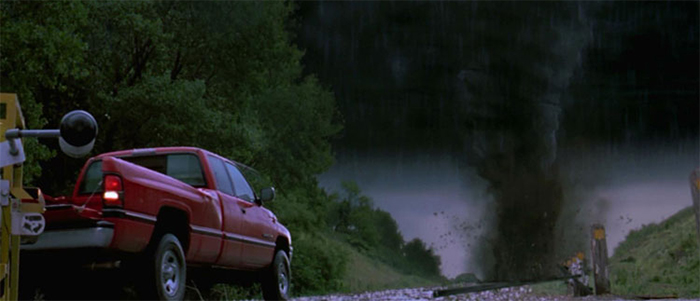
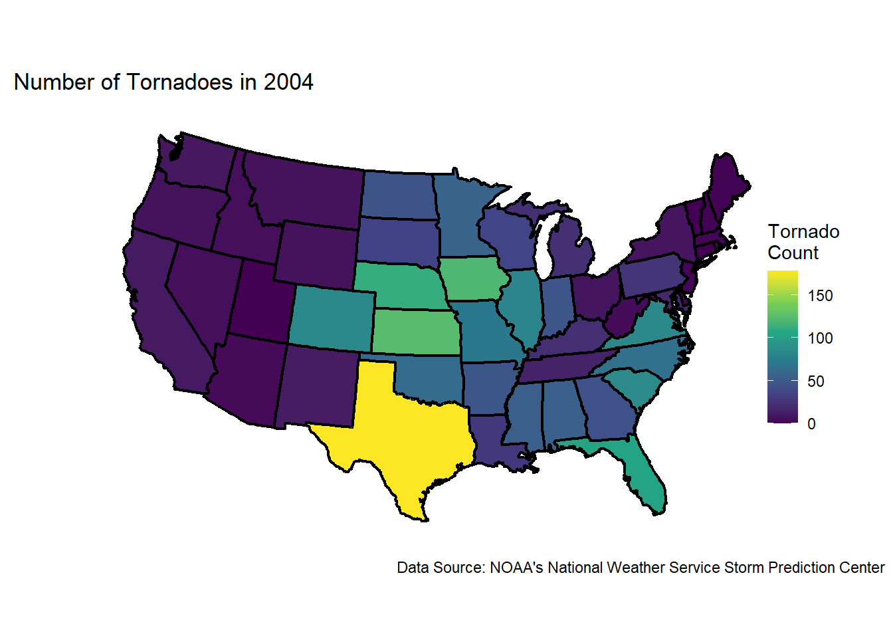
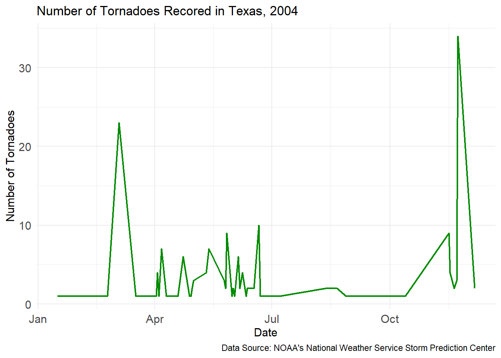

Tornadoes are a natural weather phenomenon that have intrigued storm chasers and weather gurus for years. If you’re thinking about moving to the Midwest part of the United States any time soon, they are a good factor to consider. Tornadoes can be devastating, usually taking down every structure in its path. We will be investigating tornado trends over the past 70 years, looking at when and where the most tornadoes have touched the ground over the time.
A Look at the Data
The data that is used in this investigation comes from the National Oceanic and Atmospheric Administration’s (NOAA) National Weather Service Storm Prediction Center Severe Weather Maps, Graphics, and Data Page. This set contains data on tornadoes starting in 1950 up until 2022.
Some of the important variables included in this data set are:
om: Tornado number; an ID for this tornado in this year
yr: Year
mo: Month
dy: Day
date: Date tornado was recorded
st: Two-letter postal abbreviation for the state
mag: Magnitude on the Fujita scale (F scale)
For our research, we will be only focusing on tornado reports on the contiguous United States (excluding Hawaii and Alaska).
Visual Analysis
To begin, we will look at the number of tornadoes reported each year since 1950.
From the plot above we can see that throughout the late 1900’s, the number of tornadoes per year varies, but overall tends to slowly increase. The red dot represents the year with the most tornadoes recorded by the NOAA. This year is 2004, with a record number of 1,817 tornadoes. To get a closer look of what was happening in 2004, we will investigate where in the US tornadoes were touching down during this time.
Warning: A numeric `legend.position` argument in `theme()` was deprecated in ggplot2
3.5.0.
ℹ Please use the `legend.position.inside` argument of `theme()` instead.
The map demonstrates the number of tornadoes recorded in each state in 2004. From this we can see that the Midwest experienced the bulk of the tornadoes seen that year, with Texas at the top. In 2004, Texas saw 178 tornadoes throughout the year. This is not a surprise, as Texas is known for experiencing the highest number of tornadoes per year among the states in Tornado Alley. To delve even deeper into the specifics of 2004, we can analyze the number of tornadoes occurring each month in Texas.

From this plot we can clearly examine the trend of tornadoes seen in Texas throughout the months during 2004. There are two peaks that can be seen here, one occurring in April and the other occurring in November. On April 4th, 2004 Texas recorded 23 tornadoes on this day alone. On November 23rd, 2004 there were 34 tornadoes recorded on this day.
Conclusion
In conclusion, we found that the trend of tornadoes per year has been slowing increasing in the United States since the 1950’s. We have also seen that there was a spike in the number of tornadoes in 2004, with Texas receiving the majority. It would be good to acknowledge that this does not directly indicate that Texas is the most dangerous location to live when it comes to tornadoes. Texas is one of the largest states in the US, and therefore geographically covers a lot of area within Tornado Alley. It would be interesting for future analyses to investigate this topic while disregarding state boundaries.
In the future, it would also be interesting to include the magnitude of these tornadoes, and look into the locations that have experienced the strongest tornadoes. The width of a tornado would also be interesting to examine, as tornadoes can expand up to 2 miles in width.
Connection to Class Ideas
To make the visualizations more appealing, I added color to all of them. In the first plot, I added a red dot that would stand out and draw attention to the peak I wanted to further investigate. I chose a continuous color scale for the map that could accurately represent the number of tornadoes in each state and chose a color palette that could be interpreted by everyone. I also increased the font size of the labels on both of the line plots so that they were easier to read.